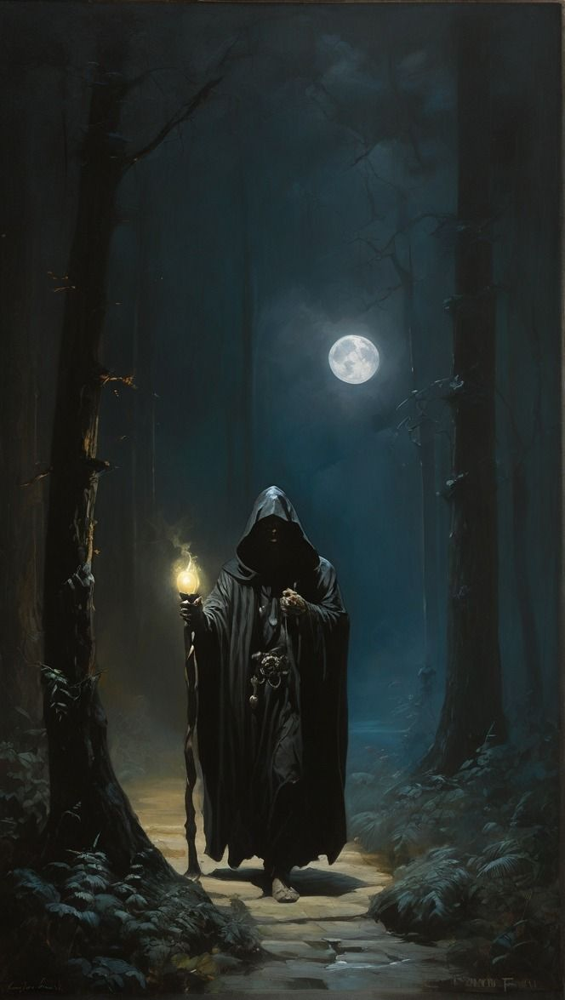

A lantern glows between tilted stones. Brann the gravekeeper studies your face through the mist.
Theme
Act II - Marsh Path

A lantern glows between tilted stones. Brann the gravekeeper studies your face through the mist.